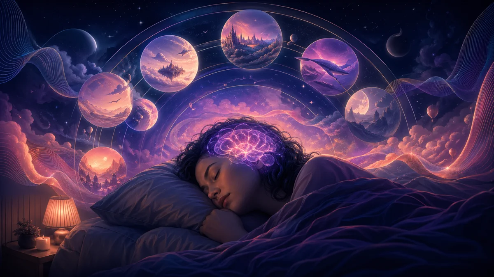

REM-Schlaf und Träume: Den nächtlichen Reset Ihres Gehirns verstehen
Jede Nacht durchläuft Ihr Gehirn verschiedene Schlafphasen, aber die Magie geschieht im REM-Schlaf. Ihre lebhaftesten Träume entfalten sich, Erinnerungen festigen sich und Ihr Geist verarbeitet Emotionen. Das Verständnis des REM-Schlafs ist der Schlüssel zu einer besseren Traumerinnerung und Schlafqualität.
Kurzantwort
Entdecken Sie die Wissenschaft des REM-Schlafs und seine Rolle beim Träumen. Erfahren Sie, wie Schlafzyklen funktionieren und optimieren Sie Ihre REM-Phasen.

Was ist REM-Schlaf? Die Traumphase erklärt
REM steht für Rapid Eye Movement, benannt nach den charakteristischen schnellen Augenbewegungen, die in dieser Phase unter geschlossenen Augenlidern auftreten. Der REM-Schlaf wurde 1953 von den Forschern Eugene Aserinsky und Nathaniel Kleitman entdeckt und stellt einen der faszinierendsten Bewusstseinszustände dar.
Während des REM-Schlafs ist Ihr Gehirn fast so aktiv wie im Wachzustand, Ihr Körper ist jedoch vorübergehend gelähmt. Dieser paradoxe Zustand – manchmal auch „paradoxer Schlaf“ genannt - schafft die perfekten Bedingungen für die lebhaftesten, geschichtenähnlichen Träume.
Hauptmerkmale von REM-Schlaf und -Träumen
- Schnelle Augenbewegungen: Augen huschen unter den Augenlidern hin und her und verfolgen möglicherweise Traumbilder
- Muskelatonie: Willkürliche Muskeln sind gelähmt, um das Ausleben von Träumen zu verhindern
- Erhöhte Gehirnaktivität: Neuronale Aktivität gleicht in vielen Regionen dem Wachzustand
- Unregelmäßige Vitalfunktionen: Herzfrequenz, Atmung und Blutdruck schwanken
- Lebhaftes Träumen: 80 % des Erwachens aus der REM-Phase liefern Traumberichte
Erwachsene verbringen normalerweise 20–25 % der gesamten Schlafzeit in der REM-Phase, was über mehrere Zyklen hinweg etwa 90–120 Minuten pro Nacht entspricht.
Schlafzyklen und REM-Phasen verstehen
Schlaf ist kein einheitlicher Zustand – es ist ein sorgfältig orchestrierter Verlauf durch verschiedene Phasen, die sich im Laufe der Nacht wiederholen. Jeder komplette Zyklus dauert ungefähr 90–110 Minuten und wiederholt sich 4–6 Mal pro Nacht.
Die vier Phasen des Schlafens und Träumens
Stadium 1 (N1): Leichter Schlaf
- Übergang zwischen Wachheit und Schlaf
- Dauert nur 1–5 Minuten pro Zyklus
- Leichtes Aufwachen, kann hypnische Zuckungen verspüren
- Theta-Wellen beginnen im EEG aufzutreten
Stadium 2 (N2): Tieferer leichter Schlaf
- Repräsentiert 45-55 % des gesamten Schlafs
- Körpertemperatur sinkt, Herzfrequenz verlangsamt
- Schlafspindeln und K-Komplexe treten auf – entscheidend für die Gedächtniskonsolidierung
- Werden Sie der Umgebung weniger bewusst
Stufe 3 (N3): Tiefschlaf (langsamer Schlaf)
- Tiefster und erholsamster Schlaf Stadium
- Deltawellen dominieren die Gehirnaktivität
- Körperliche Wiederherstellung findet statt – Gewebereparatur, Immunfunktion, Wachstumshormonausschüttung
- Sehr schwer aufzuwachen, Orientierungslosigkeit beim Erwachen
- Träume können auftreten, sind aber normalerweise vage und nicht erzählerisch
REM-Schlaf: Traum Stadium
- Erstes Auftreten etwa 90 Minuten nach dem Einschlafen
- Längere Dauer mit jedem Zyklus (von 10 Minuten auf 60+ Minuten)
- Gehirnaktivität ähnlich wie im Wachzustand
- Die lebhaftesten, einprägsamen Träume treten hier auf
Wie sich Schlafzyklen im Laufe der Zeit verändern Nacht
Die Zusammensetzung der Schlafzyklen ändert sich im Laufe der Nacht dramatisch:
- Frühe Nacht (Zyklen 1-2): Dominiert durch Tiefschlaf (N3), minimale REM-Phase
- Mitte Nacht (Zyklen 3-4): Weniger Tiefschlaf, REM-Phasen verlängern sich
- Späte Nacht (Zyklen 5–6): Fast kein Tiefschlaf, REM-Phasen können 30–60 Minuten dauern
"Deshalb führt eine Verkürzung des Schlafs um nur ein oder zwei Stunden unverhältnismäßig dazu, dass Sie den REM-Schlaf verlieren – Sie verpassen die längsten und traumreichsten Zyklen der Nacht."
Warum der REM-Schlaf für das Träumen entscheidend ist
Während Träume in jedem Schlafstadium auftreten können, ist der REM-Schlaf die Traumfabrik des Gehirns. Hier erfahren Sie, warum REM die lebhaftesten und einprägsamsten Träume erzeugt:
Einzigartige Gehirnchemie während des REM-Schlafs
Während des REM-Schlafs verschieben sich die Neurotransmitterspiegel dramatisch:
- Acetylcholin steigt: Dieser Neurotransmitter aktiviert den visuellen Kortex und den Hippocampus und erzeugt lebendige Bilder und Zugriff auf Erinnerungen
- Noradrenalin und Serotonin sinken auf Null: Dies reduziert logisches Denken und Realitätstests und ermöglicht bizarre Trauminhalte
- Dopamin steigt: Verbessert Motivation, Emotionen und Belohnungsverarbeitung in Träumen
Während der REM-Phase werden Gehirnregionen aktiviert Träume
PET-Scans und fMRT-Studien zeigen, dass im REM-Schlaf:
- Visueller Kortex: Sehr aktiv, Traumbilder entstehen
- Amygdala: Das emotionale Zentrum feuert intensiv und erklärt emotionale Trauminhalte
- Hippocampus: Speicherzentrum integriert neue und alte Informationen
- Motorischer Kortex: Aktiv, aber Signale werden blockiert, wodurch Traumbewegungsempfindungen entstehen
- Präfrontaler Kortex: DEAKTIVIERT - logisches Denken und Selbstwahrnehmung ist offline
Dieses einzigartige Muster erzeugt den perfekten Sturm für lebendige, emotionale, unlogische Erzählungen, die sich beim Erleben völlig real anfühlen.
REM- und Nicht-REM-Träume: Hauptunterschiede
Träume gibt es nicht nur im REM-Schlaf, aber die Qualität unterscheidet sich dramatisch zwischen den Phasen:
REM-Träume
- Lebendige, detaillierte Bilder
- Komplexe Erzählungen mit Handlung
- Bizarre, unlogische Elemente
- Intensive Emotionen
- Bessere Erinnerung beim Aufwachen
- Beinhaltet oft Bewegung und Aktion
Nicht-REM-Träume
- Vage, fragmentierte Bilder
- Gedankenähnliche, statische Szenen
- Realistischerer, alltäglicher Inhalt
- Gedämpfte Emotionen
- Schwer zu erinnern
- Beinhaltet oft Gedanken über alltägliche Sorgen
Untersuchungen zeigen, dass 80–90 % der Menschen lebhafte Träume berichten, wenn sie aus dem REM-Schlaf erwachen, verglichen mit nur 20–50 %, wenn sie aus dem Nicht-REM-Schlaf erwachen. Die Träume aus dem Nicht-REM-Schlaf sind in der Regel kurze, gedankenartige Erlebnisse und keine immersiven Erzählungen.
Was in Ihrem Gehirn während des REM-Schlafs passiert
REM-Schlaf stellt einen einzigartigen neurologischen Zustand dar, den der Forscher J. Allan Hobson „das Gehirn im schlafenden Körper wach“ nannte. Folgendes passiert:
Die PGO-Wellen: Gehirnsignale, die REM-Träume auslösen
Ponto-Geniculo-Occipitale (PGO) Wellen entstehen im Pons (Hirnstamm), wandern durch den Geniculatumskern (visuelle Weiterleitung) und erreichen den okzipitalen Kortex (visuelle Verarbeitung). Diese elektrischen Ausbrüche:
- Lösen schnelle Augenbewegungen aus
- aktivieren visuelle Traumbilder
- können visuelle Erinnerungen festigen
- treten in Stößen während des gesamten REM-Schlafs auf
Gedächtniskonsolidierung während des REM-Schlafs
Der REM-Schlaf spielt eine entscheidende Rolle bei verschiedenen Arten des Gedächtnisses:
- Prozedurales Gedächtnis: Fähigkeiten wie das Spielen von Instrumenten oder Sport werden gestärkt
- Emotionales Gedächtnis: REM hilft, emotionale Erfahrungen zu verarbeiten und zu integrieren
- Kreative Problemlösung: REM ermöglicht neuartige Verbindungen zwischen unterschiedlichen Ideen
Studien zeigen, dass Personen mit REM-Deprivation schneiden bei kreativen Aufgaben schlechter ab und haben Schwierigkeiten, neue motorische Fähigkeiten zu erlernen. Das berühmte „drauf schlafen“ Ratschläge haben wissenschaftliche Unterstützung – REM-Schlaf hilft Ihnen buchstäblich, Probleme zu lösen.
Emotionale Regulierung und Verarbeitung im REM-Schlaf
REM-Schlaf fungiert als „Übernachttherapie“; für emotionale Erlebnisse. Während der REM-Phase:
- Emotionale Erinnerungen werden in der Amygdala reaktiviert
- Die emotionale "Aufladung" Die Anzahl der Erinnerungen wird allmählich reduziert
- Stressige Erfahrungen werden verarbeitet und integriert
- Noradrenalin (Stresshormon) fehlt und ermöglicht eine sichere Verarbeitung
"REM-Schlaf ist wie eine Therapie ohne Therapeuten – Ihr Gehirn verarbeitet schwierige Emotionen in einer neurochemisch sicheren Umgebung." - Dr. Matthew Walker, Schlafforscher
So optimieren Sie Ihren REM-Schlaf für bessere Träume
Da sich der REM-Schlaf auf die späteren Schlafzyklen konzentriert, ist es entscheidend, ausreichend Gesamtschlaf zu bekommen. Es gibt jedoch spezifische Strategien, um die Qualität und Quantität des REM-Schlafs zu verbessern:
Schlafdauer und -zeitpunkt zur Optimierung des REM-Schlafs
- 7-9 Stunden anstreben: Schlafverkürzung reduziert den REM-Schlaf überproportional
- Behalten Sie einen konsistenten Zeitplan bei: Gehen Sie zu Bett und wachen Sie auf Täglich zur gleichen Zeit
- Stellen Sie nicht mehrere Alarme ein: Der REM-Rebound nach dem Schlummern des Alarms ist von schlechter Qualität
- Erlauben Sie ein natürliches Aufwachen: Wenn möglich, während der späten REM-Phase ohne Alarm aufwachen
Umweltfaktoren, die die REM-Phase beeinflussen Schlaf
- Schlafzimmer kühl halten: 60-67°F (15-19°C) ist optimal für den REM-Schlaf
- Völlige Dunkelheit: Licht unterdrückt den REM-Schlaf; Verwenden Sie Verdunkelungsvorhänge oder Augenmasken.
- Lärm minimieren: Plötzliche Geräusche können den REM-Schlaf stören
- Bequeme Bettwäsche: Körperliche Beschwerden reduzieren den REM-Schlaf
Substanzen, die den REM-Schlaf und die Träume beeinflussen
REM-Unterdrücker (vermeiden):
- Alkohol: Fragmentiert und reduziert den REM-Schlaf stark
- Cannabis/THC: Unterdrückt den REM-Schlaf (kann beim Stoppen zu einem REM-Rebound führen)
- Antidepressiva (SSRIs, SNRIs): Kann REM um bis zu 30 % reduzieren
- Betablocker: Einige reduzieren REM und Traumerinnerung
- Benzodiazepine: Reduzieren den REM-Prozentsatz
REM-Verstärker:
- Melatonin: Kann bei Einnahme den REM-Prozentsatz erhöhen richtig
- Galantamine: Cholinesterasehemmer, der die REM-Phase steigert (wird von klaren Träumern verwendet)
- Vitamin B6: Kann die Lebendigkeit und Erinnerung von Träumen verbessern
- Regelmäßige Bewegung: Erhöht die gesamte REM-Phase Schlafen Sie, wenn Sie regelmäßig trainieren
Lebensstilpraktiken zur Verbesserung des REM-Schlafs
- Regelmäßig Sport treiben: Aber nicht innerhalb von 3 Stunden vor dem Schlafengehen
- Stress bewältigen: Hoher Cortisolspiegel stört REM-Zyklen
- Meditation vorher Bett: Beruhigt den Geist und fördert tiefere Schlafzyklen
- Vermeiden Sie spätes Koffein: Die Halbwertszeit beträgt 5-6 Stunden; Schauen Sie am frühen Nachmittag vorbei.
- Lichteinwirkung: Helles Licht am Morgen, schwaches Licht am Abend reguliert die Zyklen
REM-Schlafstörungen: Wenn Träume schief gehen
Wenn der REM-Schlaf schief geht, können verschiedene unterschiedliche Störungen auftreten:
REM-Schlafverhaltensstörung (RBD): Träume ausleben
Bei RBD versagt die normale Muskellähmung des REM-Schlafs und ermöglicht es den Menschen, ihre Träume physisch auszuleben. Dies kann Folgendes zur Folge haben:
- Schlagen, Treten oder Fuchteln im Schlaf
- Lautes Schreien oder Sprechen
- Aus dem Bett springen
- Verletzungen bei sich selbst oder dem Schlafpartner
RBD betrifft etwa 0,5 % der Erwachsenen und tritt häufiger bei Männern auf über 50. Wichtig ist, dass RBD ein früher Indikator für neurodegenerative Erkrankungen wie die Parkinson-Krankheit sein kann – etwa 80 % der RBD-Patienten entwickeln schließlich eine Parkinson-Störung.
Narkolepsie: REM-Schlafstörung im Wachzustand
Narkolepsie beinhaltet eine Funktionsstörung der REM-Schlafregulation, die Folgendes verursacht:
- Übermäßige Schläfrigkeit tagsüber: Überwältigender Drang, tagsüber zu schlafen
- Kataplexie: Plötzliche Muskelschwäche, ausgelöst durch Emotionen (REM-Atonie im Wachzustand)
- Schlaflähmung: Häufige Episoden von REM-Lähmung beim Aufwachen oder Einschlafen
- Hypnagoge Halluzinationen: Lebhafte REM-ähnliche Träume beim Einschlafen
- REM-Schlafbeginn: Eintreten in den REM-Schlaf innerhalb von 15 Minuten Schlaf (im Vergleich zu normalen 90 Minuten)
REM-Schlafentzug: Auswirkungen auf Träume und Gesundheit
Chronischer Mangel an REM-Schlaf, sei es aufgrund kurzer Schlafdauer oder Schlafstörungen, führt zu:
- Beeinträchtigte Gedächtniskonsolidierung
- Reduzierte emotionale Regulierung
- Verminderte Kreativität und Problemlösungsfähigkeit
- Erhöhtes Risiko für Stimmungsstörungen
- REM-Erholung (intensive, lebhafte Träume), wenn sich der Schlaf normalisiert
Albtraum Störung
Häufig, schwerwiegend Alpträume die den Schlaf stört und tagsüber Beschwerden verursacht. Oft verbunden mit:
- PTSD und Trauma
- Angststörungen
- bestimmten Medikamenten
- Entzug von REM-unterdrückenden Substanzen
Die Behandlung beinhaltet oft Imagery Rehearsal Therapy (IRT), bei dem Patienten Albtraumenden umschreiben und proben Sie positive Versionen im Wachzustand.
Verbesserung der Traumerinnerung durch REM-Bewusstsein
Das Verständnis der REM-Schlafzyklen kann Ihre Fähigkeit, sich an Träume zu erinnern, erheblich verbessern:
Timing Ihres Aufwachens
Da REM-Perioden in 90-Minuten-Zyklen auftreten und sich im Laufe der Nacht verlängern, steigt das Aufwachen nach vollständigen Zyklen Traumerinnerung:
- Berechnen Sie in 90-Minuten-Schritten: 6 Stunden (4 Zyklen), 7,5 Stunden (5 Zyklen) oder 9 Stunden (6 Zyklen)
- Wach natürlich auf, wenn möglich: Natürliches Erwachen findet oft während oder direkt nach der REM-Phase statt
- Bleiben Sie beim Aufwachen still: Bewegung kann die Traumerinnerung stören
Die Wake-back-to-Bed (WBTB)-Technik
Diese Technik nutzt die REM-reichen letzten Schlafzyklen:
- 4–6 Stunden lang schlafen
- Wach auf und bleib 15–30 Minuten wach
- Schlafe 1–2 Stunden lang wieder ein
- Dieser letzte Schlaf wird fast ausschließlich REM-Schlaf sein, mit extrem lebhaften Träumen
Traumtagebuch ausgeglichen mit REM
- Aufzeichnung sofort: REM-Träume verblassen innerhalb von 5–10 Minuten nach dem Aufwachen
- Halten Sie Werkzeuge bereit: Diktiergerät, Telefon oder Tagebuch am Krankenbett
- Erfassen Sie zuerst Schlüsselwörter: Machen Sie sich zunächst keine Gedanken über vollständige Erzählungen
- Emotionen notieren: REM-Träume sind emotional reichhaltig; Gefühle aufzeichnen
"Die ersten 90 Sekunden nach dem Aufwachen aus der REM-Phase sind entscheidend. Sogar das Sitzen kann Traumerinnerungen löschen. Liegen Sie still und üben Sie den Traum im Geiste, bevor Sie ihn aufzeichnen."
Nahrungsergänzungsmittel und Techniken
- Vitamin B6: 100–250 mg vor dem Schlafengehen können die Lebendigkeit und Erinnerung an Träume verbessern.
- Galantamine: 4–8 mg während der Ganzkörper-Traumata-Erkrankung können REM-Träume dramatisch intensivieren (Arzt konsultieren)
- Realität Testen: Fragen: „Träume ich?“ den ganzen Tag über in REM-Träume fortführt
- Trauminkubation: Die Konzentration auf ein Thema vor dem Schlafengehen kann den Inhalt von REM-Träumen beeinflussen
Es ist von grundlegender Bedeutung, dass Ihr Gehirn vollständige Schlafzyklen benötigt, um auf die reichhaltigsten REM-Perioden zugreifen zu können. Viele Menschen opfern die letzten ein bis zwei Stunden Schlaf, ohne zu merken, dass sie ihre lebhaftesten und unvergesslichsten Träume auslassen.
Gestellte Fragen
Wie viel REM-Schlaf brauche ich?
Erwachsene benötigen typischerweise 90–120 Minuten REM-Schlaf pro Nacht, was etwa 20–25 % des gesamten Schlafs ausmacht. Dies geschieht normalerweise über 4–6 REM-Zyklen im Laufe der Nacht, wobei die REM-Perioden zum Morgen hin länger werden.
Warum sind REM-Träume lebendiger als andere Träume?
REM-Träume sind lebendiger, da während des REM-Schlafs die Gehirnaktivität in visuellen, motorischen, emotionalen und Gedächtniszentren genauso hoch ist wie im Wachzustand. Der präfrontale Kortex (logisches Denken) ist weniger aktiv, sodass sich bizarre, emotionale Erzählungen ohne logische Einschränkungen entfalten können.
Kann ich meinen REM-Schlaf auf natürliche Weise verlängern?
Ja. Halten Sie einen konsistenten Schlafrhythmus ein, schlafen Sie 7 bis 9 Stunden, vermeiden Sie Alkohol und bestimmte Medikamente, die die REM-Phase unterdrücken, treiben Sie regelmäßig Sport (jedoch nicht vor dem Schlafengehen), halten Sie Ihr Schlafzimmer kühl (18–20 °C) und reduzieren Sie Stress durch Entspannungstechniken.
Quellen / Weiterführende Literatur
- APA Dictionary of Psychology – Traum
- Nielsen (2010) – Traum Analyse und Klassifizierung (Rezension, PubMed)
- DreamResearch.net – G. William Domhoff (Überblick über die Traumforschung)
- Aserinsky & Kleitman (1953) – Entdeckung des REM-Schlafs (Wissenschaft, PubMed-Zusammenfassung)
- Sleep Foundation – Schlafstadien
- NINDS – Grundlagen des Gehirns: Schlaf verstehen
Letzte Aktualisierung: 26. Dezember 2025
Verwandte Symbole erkunden
Tauchen Sie tiefer in die Symbole aus diesem Artikel ein:
Weiterlesen
Weitere Ressourcen zum gleichen Thema
Warum vergessen wir unsere Träume? Die Wissenschaft hinter Traumamnesie
Entdecken Sie die Gehirnmechanismen und Neurochemie, die erklären, warum wir 95 % unserer Träume beim Aufwachen vergessen.
WissenschaftKönnen Träume die Zukunft vorhersagen? Die Wissenschaft präkognitiver Träume
Entdecken Sie die faszinierende Wissenschaft hinter präkognitiven Träumen und ob sie wirklich die Zukunft vorhersagen können.
WissenschaftTräume und psychische Gesundheit: Wie Ihr Schlaf Ihren Geist offenbart
Entdecken Sie die tiefe Verbindung zwischen Träumen und psychischer Gesundheit. Erfahren Sie, wie Angst, Depression und Trauma Ihre Träume beeinflussen und wie Traumarbeit die Heilung unterstützen kann.